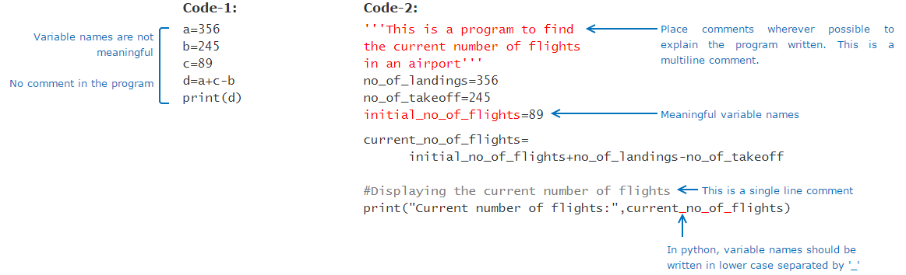

Why programming ?
In this digital age the knowledge of programming is essential in order to bring innovation and change. To create value with your own ideas you need to know how to code. Programming has become basic literacy for the 21st century.
What is a program ?
We give instructions to computer to accomplish specific tasks. Such instructions are known as program and the act of creating a program is known as programming. Did you know? WhatsApp, Facebook, YouTube, Gmail are all programs!
Problem Solving
The solution to any problem involves the below three aspects:

Algorithm & its Representation
Process is basically a sequence of computations to be performed using some Logic. This is also known as an Algorithm. Different logic gives rise to different algorithms.

Algorithm should be represented from our mental thoughts into a form which others can understand. There are primarily two ways of representing an algorithm:
- Flow chart: Diagrammatic way of representing the algorithm.
- Pseudo-code: Representation of the algorithm in a way that is in between a program and normal English.
Pseudo-code cannot be executed by a computer. It is just a representation of an algorithm for us to understand.

Variables & Operators
Variables are like containers for data(i.e they hold the data) and the value of variable can vary in the pseudo-code
To assign a value to the variable, we can use the = symbol. It is also called the assignment operator.It's called an operator because it operates on the data.
Arithmetic operators: Used for performing arithmetic operations
| Operators | Description |
|---|---|
| + | Addition |
| - | Subtraction |
| * | Multiplication |
| / | Division |
| % | Modulus |
Relational operators: Also known as comparison operators, are used to compare values. Result of a relational expression is always either true or false.
| Operators | Description |
|---|---|
| == | Equal to |
| < | Less than |
| > | Greater than |
| <= | Less than or equal to |
| >= | Greater than or equal to |
| != | Not equal to |
Logical operators are used to combine one or more relational expressions.
| Operators | Description |
|---|---|
| AND | Result will be true, if both the expressions are true. If any one or both the expressions are false, the result will be false |
| OR | Result will be true, even if one of the expression is true. If both the expressions are false, the result will be false |
| NOT | If the expression is true, result will be false and vice versa |
Decision Constructs
In a pseudo-code, typically the instructions are performed one by one or line by line. But there may be situations when all the statements in a pseudo-code are not performed. Parts of the pseudo-code which change the flow of instructions or in other word, change the flow of control are called as control structures.
Selection Constructs
if-else statements
if (Runway=="free") then
display "Land"
else if (Fuel_Status=="low") then
display "Emergency landing"
else
display "Circle in the air"
end-if
Iteration Constructs
Sometimes, we may want to execute some statements specific (known) number of times. In such cases we can use a for loop
When we want to repeatedly execute a statement as long as a condition is met, we can use the iteration statement called as while loop.
Beware of infinite loops. The logic that we are writing in loops should ensure that the loop will terminate in finite number of iterations.
What is a programming language ?
To instruct the computer we need to write a program in a programming language.
we will learn python which is a interpreted.Yahoo Groups,Nokia,CIA use python
Datatypes
Data
We know that a program works on data or values. Some examples of values are 1, 1.0 and "Hello".
For a program to use a data, it must be stored in a memory location. The values are stored in binary form in computer memory.
How do we know how many bits are required to represent a value or how much space it needs in memory?
This is determined by the data type of the value and the programming language. e.g. number, string etc. Thus every value will have a type.
Datatype
Data Type determines the operations that can be performed on a value. For e.g. we can perform operations like addition, multiplication, division, subtraction etc. on numerical data types. We can concatenate, convert case, extract substring etc. on string data types.
A program may have data belonging to different types. Common data types used in programming are:
| Category | Data Type | Example |
|---|---|---|
| Numeric | int | 123 |
| Numeric | long | 1237126381763817 |
| Numeric with decimal point | float | 123.45 |
| Numeric with decimal point | double | 123123.32345324 |
| Alphanumeric | char | A |
| Alphanumeric | String | somu |
| Bollean | boolean | True,False |
Python programming language supports the following datatypes:
| Category | Python |
|---|---|
| Numeric | int |
| Numeric | long |
| Numeric | complex |
| Numeric with decimal point | float |
| Alphanumeric | String |
| Boolean | boolean |
In Python, the data type of a value can be identified by using type(value).
print(type(3))
print(type("Hello World"))
print(type(False))
print(type(2.0))
O/P:
<class 'int'>
<class 'str'>
<class 'bool'>
<class 'float'>
Variables
A variable is a name that is assigned to a value. It is done so that we can refer to that value at some later point in the program.
Let us see the usage of values and variables in a program.
- During input, we receive values and assign them to variables.
- During processing, we perform operations on values and variables to generate more values. These computed values are also assigned to variables.
- During output, we display the computed values in variables to the end users.
num=100
msg="Hello"
Static and dynamic typing
Languages like Python are dynamically typed whereas C,Go etc are statically typed.
Dynamic Typing is a technique in some languages where depending on how a value is used, the data type of the variable is dynamically and automatically assigned.
Static Typing is used in some languages where the data type has to be declared before a variable is used
Reserved words
Any name can be given to a variable however, we cannot use some of the built-in keywords of the language. These keywords are known as reserved words.
Storing data
If you put a small product in a big box, you may end up wasting space. Similarly if you put a big product in a small box you may end up damaging the product.
Just like product is placed in a box, data occupies memory. Some data need more memory whereas some other data require less memory based on the data type.
In Python language, automatically creates just the right memory needed - neither less nor more.
Variable and its dimensions
We have seen that a variable will have a name, value, type and it will occupy memory. Apart from these, it has two more dimensions - scope and lifetime. Thus we can say that any variable will have the following six dimensions.
Operators
Operators help to perform an operation.
Note: In Python, // indicates integer division.
Example: 11//2=5
| Common Operators | Python |
|---|---|
| Arithmetic Operators | +,-,*,/, %,// |
| Relational Operators | ==,!=,>,<,>=,<= |
| Assignment Operators | =,+=,-=,*=,/=,%= |
| Logical Operators | and,or,not |
True or False
The result of a relational or logical expression is always a boolean (true or false). Apart from the boolean values, other values can also be used to represent a true or false value. For example, in python, value zero is considered to be equivalent to false. The common false values in Python are given below. Any other value is considered to be true.
| Python |
|---|
| None |
| False |
| 0 |
| ''/"" Empty string - two single quotes/double quotes |
Precedence of operators
Result of an expression is computed based on the precedence of the operators. Precedence of an operator can be identified based on the rule - BODMAS. Brackets followed by Orders (Powers, Roots), followed by modulo, Division and Multiplication, followed by Addition and Subtraction.
5+4*9%(3+1)/6-1
O/P:
4
- Brackets have the highest precedence followed by orders.
- Modulo, Division and Multiplication have the same precedence. Hence if all appear in an expression, they are evaluated from Left to Right.
- Addition and Subtraction have the same precedence. Hence if both appear in an expression, they are evaluated from Left to Right.
prefer to have brackets as it makes the expression readable and brings in a lot more clarity.
Implicit & Explicit Type Conversion
num=1 + 1.0
The result is 2.0 !
Here we were actually expecting the output as 2 but Python automatically converted 1 into a float and added with 1.0. This is known as implicit conversion.
If we want the output as 2, then we have to explicitly convert the float 1.0 into integer 1. This is known as explicit conversion. Explicit conversion involves mentioning the data type within brackets explicitly.
num=1 + int(1.0)
The result will be 2 !
Programming languages define their own rule for implicit and explicit conversions and these rules will change from language to language.
We noticed that implicit conversions are dangerous as one may encounter unexpected result. Similarly, one has to be careful in explicit conversions as well. For example,
- Converting a floating point value to integer would result in loss of decimal point values.
- A larger data type if converted to smaller data type will result in loss of data as the number will be truncated.
| Conversion | Python |
|---|---|
| Conversion to int | int() Eg: num=int(“10”) | Value of num will be 10 |
| Conversion to string | str() Eg: num=str(10) | Value of num will be “10” |
Coding Standards
As per Google style guide , variable names in Python should be written as var_name.The pattern followed in Python is known as snake_case
Apart from this, it is important to place comments wherever possible to explain code and use meaningful variable names. Comment is an explanation provided in the code which makes it easier to understand for a person who is going through the code.
These are all part of coding standards which is a set of guidelines that can be used to enhance the readability and clarity of the program.It also makes it easier to debug and maintain the program.
Formatting Output
print("Let's see some examples.\n\nDid you notice the empty lines?")
print("Do you notice\t the tab space?\nDid you see that I have moved to next line?")
print("Do you want a \" in your text?")
print("Are you going to store more info about escape sequence in Z:\\\\user\\escape_sequence.txt??")
#Every print starts with a new line, end can change that behavior by specifying your own character
print("Did you see I start here", end=" ")
print("and I end in the same line although from a different print?")
print("As observed escape sequences help you to format your output.")
O/P:
Let's see some examples.
Did you notice the empty lines?
Do you notice the tab space?
Did you see that I have moved to next line?
Do you want a " in your text?
Are you going to store more info about escape sequence in Z:\\user\escape_sequence.txt??
Did you see I start here and I end in the same line although from a different print?
As observed escape sequences help you to format your output.
Functions
A function is a block of code that performs a particular task. In python, functions are declared using the keyword def.
Note:All the statements in the block of code must have the same level of indentation
Let's see how we can use return in different ways in a function.
#Code1
print("code-1")
def func1(a,b):
return a+b
res=func1(5,10)
print("Value returned:",res)
#Code2:
print("------------------------------------")
print("code-2")
def func2():
print("This code has nothing to return")
return
func2()
#Code3:
print("------------------------------------")
print("code-3")
def func3():
print("This code also has nothing to return and there is no return statement")
func3()
#Code 4:
print("------------------------------------")
print("code-4")
print("------------------------------------")
def func4(a,b):
if(a>b):
print("returns from if block")
return a
print("returns from outside if block")
return b
print("1st invocation of code-4")
print("Value returned:",func4(10,5))
print("------------------------------------")
print("2nd invocation of code-4")
print("Value returned:",func4(2,3))
O/P:
code-1
Value returned: 15
------------------------------------
code-2
This code has nothing to return
------------------------------------
code-3
This code also has nothing to return and there is no return statement
------------------------------------
code-4
------------------------------------
1st invocation of code-4
returns from if block
Value returned: 10
------------------------------------
2nd invocation of code-4
returns from outside if block
Value returned: 3
Control Structures
The different control structures using which the programmer specifies the order of execution of statements. The commonly used control structures in programming are:
Selection Control Structures
if-else, else if ladder, nested if
ticket_status="Confirmed"
luggage_weight=32
weight_limit=30 #Weight limit for the airline
extra_luggage_charge=0
if(ticket_status=="Confirmed"):
if(luggage_weight>0 and luggage_weight<=weight_limit):
print("Check-in cleared")
elif(luggage_weight<=(weight_limit+10)):
extra_luggage_charge=300*(luggage_weight-weight_limit)
else:
extra_luggage_charge=500*(luggage_weight-weight_limit)
if(extra_luggage_charge>0):
print("Extra luggage charge is Rs.", extra_luggage_charge)
print("Please make the payment to clear check-in")
else:
print("Sorry, ticket is not confirmed")
In else if ladder . The conditions are evaluated from top of the ladder downwards. As soon as a true condition is encountered, the statement associated with it is executed. The remaining condition checks in the ladder will be skipped.
In nested if statement. In this case, an if statement is written within another if statement. Similarly, any decision logic can also be written within an else statement.
Iteration Control Structures
for,while
In Python, for loop allows the loop to run over a specific sequence of values. In other words, for every value in the sequence, the loop runs once.
print("Flight has landed")
print("Proceed for immigration check")
for passenger_count in 1,2,3,4,5:
print("Immigration check done for passenger,", passenger_count)
'for' with range
We can create a sequence of values in Python using range(x,y,step). It creates a sequence from x to y-1 with a difference of step between each value.
It is not mandatory to give step. The default value of step is 1.
start=1
end=10
step=2
for number in range (start, end, step):
print("The current number is ", number)
for number in range(1,5):
print ("The current number is ",number)
for number in range(1,7,2):
print ("The current number is ",number)
for number in range(5,0,-1):
print ("The current number is ",number)
When we want to repeatedly execute a statement as long as a condition is met, we can use the iteration statement called as while loop.
baggage_count=100
no_of_baggage_picked=0
while(baggage_count>0):
no_of_baggage_picked = (int)(input ("Number of baggage:"))
baggage_count = baggage_count - no_of_baggage_picked
print("No. of baggage remaining:",baggage_count)
Nested Loops- loop inside another loop
number_of_passengers=5
number_of_baggage=2
security_check=True
for passenger_count in range(1, number_of_passengers+1):
for baggage_count in range(1,number_of_baggage+1):
if(security_check==True):
print("Security check of passenger:", passenger_count, "-- baggage:", baggage_count,"baggage cleared")
else:
print("Security check of passenger:", passenger_count, "-- baggage:", baggage_count,"baggage not cleared")
| Loop | When to use |
|---|---|
| for loop with range | To create a sequence and iterate over it. Not preferred when collections are involved. |
| for loop with in | To access the values of elements in a collection |
| while loop | When number of iterations are not known |
'break' and 'continue'
When we want to stop a loop or break away from it we can use break statement.
When we want to skip the remaining portion of loop statements and continue with the next iteration, we can use continue statement.
for passenger in "A","A", "FC", "C", "FA", "SP", "A", "A":
if(passenger=="FC" or passenger=="FA"):
print("No check required")
continue
if(passenger=="SP"):
print("Declare emergency in the airport")
break
if(passenger=="A" or passenger=="C"):
print("Proceed with normal security check")
print("Check the person")
print("Check for cabin baggage")
Collections
We can use collections, where data can be stored together. There are many collection data types which are supported by programming languages.
List
Let's start by exploring one of the most common collection data type - list. It can be used to store a group of elements together in a sequence.
Suppose we want to store the ticket numbers allocated to each passenger traveling in a flight. Instead of using separate variable for each ticket number, we can use a list as shown below.

storage of elements
In case of having different variables for each ticket number, variables will be stored in separate memory locations. Whereas in case of list, the elements will be stored in contiguous memory locations.
List-Index
Each element in the list has a position in the list known as an index. The list index starts from zero.

index positions actually help us to directly access a value from the list.
list_name[index] can be used to directly access the list element at the mentioned index position.
we can also use it to directly modify an element in the list.eg:ticket_list[3]=13504.
Just like how we cannot allocate 101st seat to a passenger in a 100 seat plane, we cannot access values beyond the total number of elements in the list. For example: print(ticket_list[5]) will result in index out of bound error.
Creating a list:
| Creating an empty list | sample_list=[] | |
| Creating a list with known size and known elements | sample_list1=["Mark",5,"Jack",9, "Chan",5]; sample_list2=["Mark","Jack", "Chan"] | List can store both homogeneous and heterogeneous elements |
| Creating a list with known size and unknown elements | sample_list=[None]*5 | None denotes an unknown value in Python |
| Length of the list | len(sample_list) | Displays the number of elements in the list |
Random access of elements:
| Random read | print(sample_list[2]) | |
| Random write | sample_list[2]=“James” | List is mutable i.e., the above statement will rewrite the existing value at index position 2 with “James”. |
Other operations:
| Adding an element to the end of the list | sample_list.append("James") | List need not have a fixed size, it can grow dynamically |
| Concatenating two lists | new_list=["Henry","Tim"] ; sample_list+=new_list; sample_list=sample_list+new_list | mple_list+=new_list, concatenates new_list to sample_list; sample_list=sample_list+new_list, creates a new list named sample_list containing the concatenated elements from the original sample_list and new_list |
List iteration
Iteration in lists can be done using while,for loops
list_of_airlines=["AI","EM","BA"]
print("Iterating the list using range()")
for index in range(0,len(list_of_airlines)):
print(list_of_airlines[index])
print("Iterating the list using keyword in")
for airline in list_of_airlines:
print(airline)
#Note: Here "airline" is just another user defined variable. It is not a keyword.
List Searching:
If we just want to find out whether an element is there in a list, we need not iterate through the list. Instead we can check using if..in syntax.
list_of_airlines=["AI","EM","BA"]
airline="AI"
if airline in list_of_airlines:
print("Airline found")
else:
print("Airline not found")
List Slice:
| List of airlines | AI | SJ | JA | EM | AA |
| Index | 0 | 1 | 2 | 3 | 4 |
| Negative Index | -5 | -4 | -3 | -2 | -1 |
extract the airlines from the 1st to the 3rd index positions
sub_list = list_of_airlines[1:4]
The above line provides a sub list from index position 1 to 3 (i.e., 1 to (4-1)).
We can also use negative indexing: To fetch the second last airline in the list, we can write list_of_airlines[-2]. This is equivalent to list_of_airlines[len(list_of_airlines)-2].
Negative indices can also be used for slicing.
Also list_of_airlines[-4:-1] will give us the same output as list_of_airlines[1:4]
list_of_airlines=["AI","SJ","JA","EM","AA"]
print("1)",list_of_airlines[1:4])
print("2)",list_of_airlines[-4:-1])
print("3)",list_of_airlines[1:])
print("4)",list_of_airlines[:2])
print("5)",list_of_airlines[:-2])
print("6)",list_of_airlines[-5:])
print("7)",list_of_airlines[1:-2])
print("8)",list_of_airlines[:5])
print("9)",list_of_airlines[-6:])
print("10)",list_of_airlines[-6:2])
print("11)",list_of_airlines[-3:5])
print("12)",list_of_airlines[-3:4])
O/P:
1) ['SJ', 'JA', 'EM']
2) ['SJ', 'JA', 'EM']
3) ['SJ', 'JA', 'EM', 'AA']
4) ['AI', 'SJ']
5) ['AI', 'SJ', 'JA']
6) ['AI', 'SJ', 'JA', 'EM', 'AA']
7) ['SJ', 'JA']
8) ['AI', 'SJ', 'JA', 'EM', 'AA']
9) ['AI', 'SJ', 'JA', 'EM', 'AA']
10) ['AI', 'SJ']
11) ['JA', 'EM', 'AA']
12) ['JA', 'EM']
List of Lists
#This is a list of lists
#Stores airline and number of flights operated by them
airline_details=[["AI",8], ["EM",10],["BA",7]]
#To get the details of Emirates (EM) airline
#Prints a list
print(airline_details[1])
#To get the number of flights operated by British Airways (BA)
#[2][1] refers to 2nd list and 1st value, inside airline_details
#Remember counting is 0 based
print(airline_details[2][1])
#To display the details of all airlines
print("Airline details as a list:")
for airline in airline_details:
print(airline)
#To display the number of flights operated by each airline
print("No. of flights operated by each airline:")
for airline in airline_details:
print(airline[1])
O/P:
['EM', 10]
7
Airline details as a list:
['AI', 8]
['EM', 10]
['BA', 7]
No. of flights operated by each airline:
8
10
7
List functions:
Python also have many inbuilt functions. Consider a list, num_list=[10,20,30,40,50]
| Function | Output | explanation |
|---|---|---|
| num_list.append(60) | [10,20,30,40,50,60] | Adds an element to end of list |
| num_list.index(10) | 0 | Returns the index position of the element. In case of multiple occurrence of the element, returns the index of the first occurrence. Throws ValueError, if the element is not found |
| num_list.insert(3,60) | [10,20,30,60,40,50] | Inserts an element at a given position |
| num_list.pop(3) | 40 | Removes and returns the element at given index position from the list |
| num_list.remove(30) | [10,20,40,50] | Removes the first occurring element whose value is 30 |
| num_list.sort() | [10,20,30,40,50] | Sorts the list in ascending order |
| num_list.reverse() | [50,40,30,20,10] | Reverses the list |
Tuple
Suppose it is mandatory to have the following types of food in the lunch menu of the passengers.
Welcome Drink, Veg Starter, Non-Veg Starter, Veg Main Course, Non-Veg Main Course, Dessert
How can we store it such that no one can modify the elements?
Of course, we can use a list but anybody can modify an element in the list. This is where we can use another collection data type known as tuple.
Like list, tuple can also store a sequence of elements but the value of the elements cannot be changed. (i.e. tuples are IMMUTABLE). Elements can be homogeneous or heterogeneous but they are READ-ONLY.
| Operation | Example | Description |
|---|---|---|
| Creating a tuple | lunch_menu=("Welcome Drink","Veg Starter","Non-Veg Starter","Veg Main Course","Non-Veg Main Course","Dessert") | () are optional, a set of values separated by comma is also considered to be a tuple. sample_tuple="A","B","C"; Although () are optional, it is a good practice to have them for readability of code. If we need to create a tuple with a single element, then we need to include a comma as shown below: sample_tuple=("A",) |
| Random Write | lunch_menu[0]="" | This will result in an error as tuple is immutable. Hence random write is not possible in tuple. |
tuple vs list
#Creating a tuple
lunch_menu=("Welcome Drink","Veg Starter","Non-Veg Starter","Veg Main Course","Non-Veg Main Course","Dessert")
#These are also valid
sample_tuple="A","B","C"
sample_tuple1=("D",)
#Length of the tuple
print("Number of elements in the tuple, lunch_menu:",len(lunch_menu))
#Random read
print("Element at 2nd index position in lunch_menu:", lunch_menu[2])
print("Concatenating tuples:")
#Concatenating two tuples
sample_tuple=sample_tuple+sample_tuple1 #This will create a new tuple by combining the elements of existing sample_tuple and sample_tuple1
print(sample_tuple)
#Adding a single element to a tuple
sample_tuple=sample_tuple+("E",) # This will also create a new tuple, sample_tuple
print(sample_tuple)
#Adding multiple elements to a tuple
sample_tuple=sample_tuple+("F","G") # This will also create a new tuple, sample_tuple
print(sample_tuple)
print("Iterating the tuple using range()")
for index in range(0,len(lunch_menu)):
print(lunch_menu[index])
print("Iterating the tuple using keyword in")
for food_type in lunch_menu:
print(food_type)
print("Searching for an element in tuple")
if "Dessert" in lunch_menu:
print("Dessert is there")
else:
print("Dessert is not there")
#Slicing a tuple
print("Tuple slice using positive indices:",lunch_menu[1:5])
print("Tuple slice using negative indices:",lunch_menu[-5:-1])
# comment the below code and try to visualize.
lunch_menu[0]="" #This line will result in an error, i.e., tuple is immutable
print(lunch_menu)
String
In a program, not all values will be numerical. We will also have alphabetical or alpha numerical values. Such values are called strings.
Example: “Hello World”, pancard number - “AABGT6715H” , name – “Arjun”, ticket number – “BA1045”
Each value in a string is called a character. Just like list elements, we can access the characters in a string based on its index position.
In Python, string is a data type and anything enclosed in a single quote or double quote is considered to be a string. All the remaining operations are similar to lists. But like tuple, strings are also IMMUTABLE.
#Creating a string
pancard_number="AABGT6715H"
#Length of the string
print("Length of the PAN card number:", len(pancard_number))
#Concatenating two strings
name1 ="PAN "
name2="card"
name=name1+name2
print(name)
print("Iterating the string using range()")
for index in range(0,len(pancard_number)):
print(pancard_number[index])
print("Iterating the string using keyword in")
for value in pancard_number:
print(value)
print("Searching for a character in string")
if "Z" in pancard_number:
print("Character present")
else:
print("Character is not present")
#Slicing a string
print("The numbers in the PAN card number:", pancard_number[5:9])
print("Last but one 3 characters in the PAN card:",pancard_number[-4:-1])
pancard_number[2]="A" #This line will result in an error, i.e., string is immutable
print(pancard_number)
String data type in Python has many inbuilt functions which make it easier to work with strings. Consider the string, name="Raghav".
| Function | Output | Explanaion |
|---|---|---|
| name.count("a") | 2 | Returns the count of a given set of characters. Returns 0 if not found |
| name.replace("a","A") | RAghAv | Returns a new string by replacing a set of characters with another set of characters. It does not modify the original string |
| name.find("a") | 1 | Returns the first index position of a given set of characters |
| name.startswith("Ra") | True | Checks if a string starts with a specific set of characters, returns true or false accordingly. |
| name.endswith("ha") | False | Checks if a string ends with a specific set of characters, returns true or false accordingly. |
| name.isdigit() | False | Checks if all the characters in the string are numbers, returns true or false accordingly. |
| name.upper() | RAGHAV | Converts the lowercase letters in string to uppercase |
| name.lower() | raghav | Converts the uppercase letters in string to lowercase |
| name.split("a") | ['R', 'gh', 'v'] | Splits string according to delimiter and returns the list of substring. Space is considered as the default delimiter. |
boarding_call="Good Evening, this is the final call to AI passengers for the flight AI 466 which is planned to take off at 8.40A.M."
if(boarding_call.startswith("Good Evening")):
print(boarding_call.replace("Good Evening","Good Morning"))
if(boarding_call.find("AI"))>=0:
print("Welcome to Air India.")
if(boarding_call.endswith("A.M.")):
print("Passengers are requested to have their breakfast.")
a=boarding_call.split(" ")
for i in a:
if(i.isdigit()):
print("Flight Number is specified to the passengers.")
print("Total number of times flight service name is specified in the boarding call:",boarding_call.count("AI"))
message="Thank you all..Have a nice journey!"
print(message.upper())
print(message.lower())
Note:Strings are used when you want a sequence of characters to act as a unit of information.
Lists and tuples when you want to have a sequence of individual elements.
Dictionary
In programming, a collection known as dictionary allows to store key-value pairs where each key is unique.
One of the advantage of using dictionary is that it allows very fast search for value based on key.
A dictionaries can be used to store an unordered collection of key-value pairs. The key should be unique and can be of any immutable data type. Like lists, dictionaries are mutable. Let's now understand how a dictionary is implemented in Python.
| Creating a dictionary | crew_details= { "Pilot":"Kumar", "Co-pilot":"Raghav", "Head-Strewardess":"Malini", "Stewardess":"Mala" } | First element in every pair is the key and the second element is the value. |
| Accessing the value using key | crew_details["Pilot"] | This will return the corresponding value for the specified key |
| Iterating through the dictionary |
for key,value in crew_details.items():
print(key,":",value)
|
items function gives both key and value, which can be used in a for loop. |
Dictionary in Python also have many inbuilt functions.
| Function | Output | Explanaion |
|---|---|---|
| crew_details.get("Pilot") | Kumar | Returns the value for given key. If the given key is not found, returns None |
| crew_details.update({"Flight Attendant":"Jane", "Co-pilot":"Henry"}) | No output, dictionary will be updated | Updates the dictionary with the given key-value pairs. If a key-value pair is already existing, it will be overwritten, otherwise it will be added to the dictionary |
#Creating a dictionary
crew_details={
"Pilot":"Kumar",
"Co-Pilot":"Raghav",
"Head-Strewardess":"Malini",
"Stewardess":"Mala"
}
print(crew_details["Pilot"])
print("\nIterating the dictionary using items function")
for key,value in crew_details.items():
print(key,":",value)
#Usually while working with dictionary, you will be interested in specific values.
#Let’s find the value of all pilots from crew_details.
print("\nIterating the dictionary using keyword 'in'")
for key in crew_details:
if(key=="Pilot" or key=="Co-Pilot"):
print(crew_details[key])
#Note: Dictionary being unordered, the order of the values being displayed may vary during each execution of the above for loop.
#Dictionaries are mutable
crew_details["Pilot"]="James" # Here the value for key "Pilot" is being updated to "James"
print("\nAfter modifying the value of Pilot:", crew_details["Pilot"])
print("------------------------------------------------------------------")
print("Before update:")
# Usage of get method()
print("Co-pilot:",crew_details.get("Co-Pilot"))
#Usage of update method()
crew_details.update({"Flight Attendant":"Jane", "Co-pilot":"Henry"})
print("\nAfter update:")
print("Co-pilot:",crew_details.get("Co-pilot"))
print("Flight Attendant:",crew_details["Flight Attendant"])
OP:
Kumar
Iterating the dictionary using items function
Head-Strewardess : Malini
Pilot : Kumar
Stewardess : Mala
Co-Pilot : Raghav
Iterating the dictionary using keyword 'in'
Kumar
Raghav
After modifying the value of Pilot: James
------------------------------------------------------------------
Before update:
Co-pilot: Raghav
After update:
Co-pilot: Henry
Flight Attendant: Jane
Set
A set is an unordered group of values with no duplicate entries. Set can be created by using the keyword set or by using curly braces {}. set function is used to eliminate duplicate values in a list.
| Creating a set | flight_set={500,520,600,345,520,634,600,500,200,200} | Removes the duplicates from the given group of values to create the set |
| Eliminating duplicates from a list | passengers_list=["George", "Annie", "Jack", "Annie", "Henry", "Helen", "Maria", "George", "Jack", "Remo"] unique_passengers=set(passengers_list) | set function - removes the duplicates from the list and returns a set |
| Common elements between setA and setB | setA & setB | Creates a new set which has common elements from setA and setB |
| Elements that are only in setA | setA - setB | Creates a new set which has only unique elements of setA |
| Merges elements of setA and setB | setA | setB | Creates a new set which has all the elements of setA and setB |
#list of passengers
passengers_list=["George","Annie", "Jack","Annie","Henry", "Helen","Maria","George","Jack","Remo"]
#set function - removes the duplicates from the list and returns a set
unique_passengers=set(passengers_list)
print(unique_passengers)
#creating a set
flight_set={500,520,600,345,520,634,600,500,200,200}
print(flight_set)
flights_at_src = ["AI230","BA944","EM395","AI704","BA944","AI704"]
flights_at_dest = ["SI107","AI034","EM395","AI704","BA802","SI236"]
print(flights_at_src)
print(flights_at_dest)
#Creating list of unique flights at source and destination
uniq_src_flights = set(flights_at_src)
uniq_dest_flights = set(flights_at_dest)
print(uniq_src_flights)
print(uniq_dest_flights)
#setA-setB -> Gives the elements that are only in setA
#List of flights only at source airport
flights_only_at_src = uniq_src_flights-uniq_dest_flights
print(flights_only_at_src)
#setA&setB -> Gives the common elements between setA and setB
#List of flights common to source and destination airports
common_flights=uniq_src_flights&uniq_dest_flights
print(common_flights)
#setA|setB -> merges setA and setB after removing duplicates
#List of all flights at source and destination airports
all_flights=uniq_src_flights|uniq_dest_flights
print(all_flights)
OP:
{'Jack', 'Maria', 'George', 'Remo', 'Helen', 'Henry', 'Annie'}
{200, 520, 500, 600, 345, 634}
['AI230', 'BA944', 'EM395', 'AI704', 'BA944', 'AI704']
['SI107', 'AI034', 'EM395', 'AI704', 'BA802', 'SI236']
{'EM395', 'BA944', 'AI230', 'AI704'}
{'AI034', 'SI236', 'EM395', 'BA802', 'AI704', 'SI107'}
{'BA944', 'AI230'}
{'EM395', 'AI704'}
{'AI034', 'SI236', 'EM395', 'BA802', 'AI704', 'SI107', 'BA944', 'AI230'}
Libraries:
Python has many inbuilt packages and modules.
random
One of the most useful modules is random. This module helps in generating random numbers.
The code given below generates a random number between x and y-1 (both inclusive) using the randrange function of the random module.
import random
x=10
y=50
print(random.randrange(x,y))
O/P:
45
math
import math
num1=234.01
num2=6
num3=-27.01
print("The smallest integer greater than or equal to num1,",num1,":",math.ceil(num1))
print("The largest integer smaller than or equal to num1,",num1,":",math.floor(num1))
print("The factorial of num2,",num2,":", math.factorial(num2))
print("The absolute value of num3",num3,":",math.fabs(num3))
O/P:
The smallest integer greater than or equal to num1, 234.01 : 235
The largest integer smaller than or equal to num1, 234.01 : 234
The factorial of num2, 6 : 720
The absolute value of num3 -27.01 : 27.01
Data & Time functions:
| Function | Explanation |
|---|---|
| time.gmtime() | Returns the current GM time |
| time.localtime() | Returns the current time based on the current locality |
| time.strftime(t,format) | Converts t to a string as specified by the format argument and returns it. Where t is the time returned by time.gmtime() or time.localtime(). It is optional, default value is current time as returned by time.localtime() |
| datetime.datetime.strptime (date_string, format) | Converts a date string in the specified format to a datetime value and returns it |
| datetime.date.today() | Returns the current local date |
import time
import datetime
#To get current GM time
print("Current GM time:",time.gmtime())
#This returns a time structure containing 9 values - year, month,day, hour, minute, sec, day of week, day of year and daylight savings.
#To get current local time
print("Current local time:",time.localtime())
#This also returns a time structure containing 9 values - year, month,day, hour, minute, sec, day of week, day of year and daylight savings.
#To extract today's date in a specified string format
print("Today's date using time module",time.strftime("%m-%m/%Y"))
#Python additionally allows use of datetime module
#Prints today's date
print("Today's date using datetime module:", datetime.date.today())
#To extract today's date in a specified string format
print("Today's date (dd/mm/yyyy) using datetime module:", datetime.date.today().strftime("%d/%m/%Y"))
#To convert a date in string format to datetime value
print("Today's date (dd/mm/yyyy):", datetime.datetime.strptime("17/04/1","%y/%d/%m"))
O/P:
Current GM time: time.struct_time(tm_year=2021, tm_mon=12, tm_mday=30, tm_hour=8, tm_min=45, tm_sec=19, tm_wday=3, tm_yday=364, tm_isdst=0)
Current local time: time.struct_time(tm_year=2021, tm_mon=12, tm_mday=30, tm_hour=8, tm_min=45, tm_sec=19, tm_wday=3, tm_yday=364, tm_isdst=0)
Today's date using time module 12-12/2021
Today's date using datetime module: 2021-12-30
Today's date (dd/mm/yyyy) using datetime module: 30/12/2021
Today's date (dd/mm/yyyy): 2017-01-04 00:00:00
Argument Behavior
In programming, there are two ways in which arguments can be passed to functions: pass by value and pass by reference.
Some languages use pass by value by default while others use pass by reference. Some languages support both and allow you to choose.
Everything in Python is considered to be an object and can be categorized as either 'Mutable' or 'Immutable'. In Python, arguments are passed by reference.
In python:
Pass by reference - Immutable Objects
Pass by reference - Mutable Objects
In Python, when an argument passed to a function is modified inside it, whether the change is visible outside or not depends on whether the variable is mutable or not.
Types of Arguments:
Programming languages allow controlling the ordering and default values of arguments. In python we will observe the following:
def display1(flight_number, seating_capacity):
print("Flight Number:", flight_number)
print("Seating Capacity:", seating_capacity)
print("code-1: positional arguments")
display1("AI789",200)
def display2(flight_number, seating_capacity):
print("Flight Number:", flight_number)
print("Seating Capacity:", seating_capacity)
print("-------------------------------------------------")
print("code-2: keyword arguments")
display2(seating_capacity=250, flight_number="AI789")
def display3(flight_number, flight_make="Boeing", seating_capacity=150):
print("Flight Number:", flight_number)
print("Flight Make:", flight_make)
print("Seating Capacity:", seating_capacity)
print("-------------------------------------------------")
print("code-3: default arguments")
display3("AI789","Eagle")
def display4(passenger_name, *baggage_tuple):
print("Passenger name:",passenger_name)
total_wt=0
for baggage_wt in baggage_tuple:
total_wt+=baggage_wt
print("Total baggage weight in kg:", total_wt)
print("-------------------------------------------------")
print("code-4: variable argument count")
display4("Jack",12,8,5)
O/p
code-1: positional arguments
Flight Number: AI789
Seating Capacity: 200
-------------------------------------------------
code-2: keyword arguments
Flight Number: AI789
Seating Capacity: 250
-------------------------------------------------
code-3: default arguments
Flight Number: AI789
Flight Make: Eagle
Seating Capacity: 150
-------------------------------------------------
code-4: variable argument count
Passenger name: Jack
Total baggage weight in kg: 25
Types of Variables:
There are two types of variables which we can use in a program - local variables and global variables.
Local variables are the ones which are created inside a function. They are created when the owning function starts execution and remains in memory till owning function finishes execution. They can be accessed only inside that function.
Global variables are the ones which are created outside the functions. They are created when the program execution starts and remains in memory till the program terminates. They can be read anywhere in the program - within a function or outside.
Variable & its scope
extra_baggage and extra_baggage_charge are created inside the function baggage_check(). Hence they are local to that function or in other words, they are local variables. They are created when owning function starts execution and remains in memory till owning function finishes execution. They can be accessed only inside that function.
wt_limit is created outside the functions. Hence it is a global variable. Global variables are created when the program execution starts and remains in memory till the program terminates. They can be read anywhere in the program - within a function or outside. But they are protected from modification inside a function. As it is available throughout the program, use of global variable should be restricted to avoid accidental misuse by developers and to minimize memory usage.
In cases where a global variable needs to be modified inside a function, like in function update_baggage_limit(), Python allows you to do that using the global keyword.
Exception Handling:
In python we can create a try and except block of code.
If any error occurs in the try block of code, it will jump to except block of code. Once the except block is executed, the code continues to execute other statements outside except block.
#calculating airport expenditure
def calculate_expenditure(list_of_expenditure):
total=0
try:
for expenditure in list_of_expenditure:
total+=expenditure
print(total)
except:
print("Some error occured")
print("Returning back from function.")
list_of_values=[100,200,300,"400",500]
calculate_expenditure(list_of_values)
O/P:
Some error occured
Returning back from function.
Python has many kinds of errors predefined as part of the language. Here are some of the common types.
| Built-in Exception | When it will be raised | Example |
|---|---|---|
| ZeroDivisionError | When a value is divided by zero |
num_list=[]
total=10
avg=total/len(num_list)
|
| TypeError | When we try to do an operation with incompatible data types |
total=10
total+="20"
|
| NameError | When we try to access a variable which is not defined |
avg=total/10 where total is not defined
|
| IndexError | When we try to access an index value which is out of range |
num_list=[1,2,3,4]
value=num_list[4]
|
| ValueError | When we use a valid data type for an argument of a built-in function but passes an invalid value for it |
#string is a valid data type for int() but the
value “A” is invalid, as "A" can't be
converted into int.
value="A"
num=int(value)
|
Python also allows us to handle different errors that can occur separately. That means you can have a different action or message for every unique error that occurs.
Here is the same expenditure calculation code with additional average expenditure calculation.
def calculate_expenditure(list_of_expenditure):
total=0
try:
for expenditure in list_of_expenditure:
total+=expenditure
print("Total:",total)
avg=total/num_values
print("Average:",avg)
except ZeroDivisionError:
print("Divide by Zero error")
except TypeError:
print("Wrong data type")
except:
print("Some error occured")
list_of_values=[100,200,300,"400",500]
num_values=0
calculate_expenditure(list_of_values)
Note:
- Default except block is the one without any type mentioned.
- If an error occurs and the matching except block is found, then that is executed.
- If an error occurs and the matching except block is not found, it executes the default except block.
- If an error occurs and the matching except block is not found and if the default except block is also not found, the code crashes.
- The default except block, if present should be the last except block, otherwise it will result in a runtime error.
Multiple Try Blocks
If an error occurs inside a function and if the error is not caught inside it, then the error is transferred to the function call where we have another opportunity to catch it.
def calculate_sum(list_of_expenditure):
total=0
try:
for expenditure in list_of_expenditure:
total+=expenditure
print("Total:",total)
avg=total/no_values
print("Average:",avg)
except ZeroDivisionError:
print("Divide by Zero error")
except TypeError:
print("Wrong data type")
try:
list_of_values=[100,200,300,400,500]
num_values=len(list_of_values)
calculate_sum(list_of_values)
except NameError:
print("Name error occured")
except:
print("Some error occured")
O/P:
Total: 1500
Name error occured
Finally Block:
Sometimes in programming we need to execute some code irrespective of whether the primary program logic itself succeeds or fails to do its job. In Python we can achieve this using a finally block.
A finally block of statement is an optional part of the try-except statements. A code written inside the finally block will ALWAYS be executed.
balance=1000
amount="300Rs"
def take_card():
print("Take the card out of ATM")
try:
if balance>=int(amount):
print("Withdraw")
else:
print("Invalid amount")
except TypeError:
print("Type Error Occurred")
except ValueError:
print("Value Error Occurred")
except:
print("Some error Occurred")
finally:
take_card()
O/P:
Value Error Occurred
Take the card out of ATM
Recursive Functions:
Suppose we want to find the total weight of a human tower which has 5 people standing at the bottom level. Assume that each person weighs 50 kg and there will always be odd number of men at the base level. We can solve this problem recursively. Have a look.
It can have any number of levels. Each level will have 2 men less than the previous level.

In recursion, two things are important - termination condition and recursive call. Recursive call invokes itself with a smaller argument and termination condition helps to terminate the recursive calls.

The termination condition of a recursive function if wrong, then it will end up calling itself infinitely and the program may not stop or it may throw an error.
Modules & Packages
Code organization is done through modules and packages!
- A module is nothing but a normal python file with a .py extension.
- A package is just a normal folder which contains an empty file who's name is __init__.py. Since package is a folder it can store many python modules/files in it.
Python project structure
Importing packages
Let's assume that the ManageFlights.py inside Flights package has the below code:
airline="Smart Airlines"
def add(no_of_flights):
print(no_of_flights," flights added to the fleet")
If we need to access the function add(), inside the ManageFlights module in some other module, then we can import the ManageFlights module and use it.
Import can be done in two ways:
Method 1:
from Flights import ManageFlights #from packagename import modulename
ManageFlights.add(10)
Method 2:
import Flights.ManageFlights #import packagename.modulename
Flights.ManageFlights.add(10)
Packages - Naming conflicts
Consider a scenario where 2 modules have the same name but in different package and both of them have the same function 'add'.
Flights->Manage.py->add()
Employees->Manage.py->add()
To avoid naming conflicts during import we can use one of the below techniques:
method1:
import Flights.Manage
import Employees.Manage
Flights.Manage.add()
Employees.Manage.add()
method2:
from Flights import Manage as FManage
from Employees import Manage as EManage
FManage.add()
EManage.add()
method3:
from Flights.Manage import add as add1
from Employees.Manage import add as add2
add1()
add2()
File Handling:
Python allows to create files, read from files, write content to file and append content to existing content through inbuilt functions!
| Method | Description |
|---|---|
| open(file_path,operation) | This method is used to open the file for the specified operation. The operation can either be r,w,a for read, write and append. |
| close() | This method is used to close a file which is already open. |
| write() | This method is used to write a string to a file, if file is present. If not, it creates the file and writes the string into it. |
| read() | This method is used to read all the contents of a file into a string. |
The number of files that can be simultaneously opened by a program is limited. So it is very important to close all the files, once the operations are completed.
flight_file=open("flight.txt","w")
flight_file.write("Hello")
flight_file.close()
Exceptions related to file handling
Sometimes, we may encounter exceptions when dealing with files. In this example, we are trying to write to a file which is opened in read-only mode. This will result in an exception. In such a case, let's see how we can use try except block to catch this exception.
try:
flight_file=open("flight.txt","r")
text=flight_file.read()
print(text)
flight_file.write(",Good Morning")#Exception occurs in this line
flight_file.close()#This line will not be executed
except:
print("Error occurred")
if flight_file.closed:
print("File is closed")
else:
print("File is open")
When we want to write a code that will run in all situations, we can put it in a finally block. Since closing a file is necessary we can do it in the finally block instead of in the try block.
try:
flight_file=open("flight.txt","r")
text=flight_file.read()
print(text)
flight_file.write(",Good Morning")
except:
print("Error occurred")
finally:
print("File is being closed")
flight_file.close()
if flight_file.closed:
print("File is closed")
else:
print("File is open")
Advanced
Anonymous fuctions:
An anonymous function is a function that is defined without a name.
While normal functions are defined using the def keyword in Python, anonymous functions are defined using the lambda keyword. Hence, anonymous functions are sometimes also referred to as lambda functions, and they are often used interchangeably.
You need to keep in your knowledge that lambda functions are syntactically restricted to a single expression.
Syntax:
lambda arguments: expression
The main advantage of using the lambda function is executing a lambda function that evaluates its expression and then automatically returns its result. So there’s always an implicit return statement. That’s why some people refer to lambdas as single expression functions.
code with def function:
def squares(num):
square = num * num
# You can also write square = num ** 2
return square
squares(5)
OP:
25
code with lambda function:
f = lambda x:x**2
f(5)
OP:
25
string ='GeeksforGeeks'
# lambda returns a function object
print(lambda string : string)
OP:
<function <lambda> at 0x7f65e6bbce18>
Lambda functions are often used with other functions to solve complex tasks within a few lines rather than a block of code. These functions are namely filter, map, and reduce.
#1 With list comprehensions
tables = [lambda x=x: x*10 for x in range(1, 11)]
for table in tables:
print(table(),end=" "))
OP:
10 20 30 40 50 60 70 80 90 100
#2 Lambda Function with if-else
Max = lambda a, b : a if(a > b) else b
print(Max(1, 2))
OP:
2
#3 filter() with lambda()
li = [5, 7, 22, 97, 54, 62, 77, 23, 73, 61]
final_list = list(filter(lambda x: (x%2 != 0) , li))
print(final_list)
OP:
[5, 7, 97, 77, 23, 73, 61]
#4 map() with lambda()
li = [5, 7, 22, 97, 54, 62, 77, 23, 73, 61]
final_list = list(map(lambda x: x*2, li))
print(final_list)
OP:
[10, 14, 44, 194, 108, 124, 154, 46, 146, 122]
# with map() function
animals = ['dog', 'cat', 'parrot', 'rabbit']
uppered_animals = list(map(lambda animal: str.upper(animal), animals))
print(uppered_animals)
OP:
['DOG', 'CAT', 'PARROT', 'RABBIT']
# reduce() with lambda()
# to get sum of a list
from functools import reduce
li = [5, 8, 10, 20, 50, 100]
sum = reduce((lambda x, y: x + y), li)
print (sum)
OP:
193
/*Here the results of previous two elements are added to the next element
and this goes on till the end of the list like (((((5+8)+10)+20)+50)+100).*/
filter
The filter() function, as the name suggests, will create a new list and store only the elements that satisfy a particular condition and will filter out the remaining values.
The filter() operation takes a function object and an iterable and creates a new list. A successful computation is performed whenever the condition is satisfied and returns true.
Print only the even numbers for a list of elements.
def even(a):
new_list = []
for i in a:
if i%2 == 0:
new_list.append(i)
return(new_list)
a = [1,2,3,4,5]
even(a)
OP:
[2, 4]
#filter(function, sequence)
a = [1, 2, 3, 4, 5]
even = list(filter(lambda x: (x%2 == 0), a))
print(even)
OP:
[2, 4]
# function that filters vowels
def fun(variable):
letters = ['a', 'e', 'i', 'o', 'u']
if (variable in letters):
return True
else:
return False
sequence = ['g', 'e', 'e', 'j', 'k', 's', 'p', 'r']
filtered = filter(fun, sequence)
print('The filtered letters are:')
for s in filtered:
print(s)
OP:
The filtered letters are:
e
e
map
map() function returns a map object(which is an iterator) of the results after applying the given function to each item of a given iterable (list, tuple etc.)
The map() function iterates through all items in the given iterable and executes the function we passed as an argument on each of them. This is similar to the filter() function.
It can be used to obtain Boolean values of true and false on the conditional list or just map each element to its respective output.
Print the squares of each element in a list.
def square(a):
new_list = []
for i in a:
i = i*i
new_list.append(i)
return(new_list)
a = [1,2,3,4,5]
square(a)
OP:
[1, 4, 9, 16, 25]
#map(fun, iter)
a = [1, 2, 3, 4, 5]
squares = list(map(lambda x: x ** 2, a))
print(squares)
OP:
[1, 4, 9, 16, 25]
#1
def addition(n):
return n + n
numbers = (1, 2, 3, 4)
result = map(addition, numbers)
print(list(result))
OP:
[2, 4, 6, 8]
numbers = (1, 2, 3, 4)
result = map(lambda x: x + x, numbers)
print(list(result))
OP:
[2, 4, 6, 8]
# Add two lists using map and lambda.
numbers1 = [1, 2, 3]
numbers2 = [4, 5, 6]
result = map(lambda x, y: x + y, numbers1, numbers2)
print(list(result))
OP:
[5, 7, 9]
l = ['sat', 'bat', 'cat', 'mat']
# map() can listify the list of strings individually
test = list(map(list, l))
print(test)
OP:
[['s', 'a', 't'], ['b', 'a', 't'], ['c', 'a', 't'], ['m', 'a', 't']]
Each of the elements in the list is mapped with their respective computed outputs(i.e squares).
reduce:
Unlike the previous two functions, namely filter() and map(), the reduce function works slightly different. It goes through the list of iterable numbers and proceeds to return only a single value.
This function can be useful in performing calculations like addition or multiplication of a list with a simple code rather than a longer code block.
Print the product of all the elements in the list.
def prod(a):
product = 1
for i in a:
product = product*i
return product
a = [1,2,3,4,5]
prod(a)
OP:
120
from functools import reduce
a = [1, 2, 3, 4, 5]
product = reduce(lambda x, y: x*y, a)
print(product)
OP:
120
List comprehensions:
List comprehensions offer a succinct way to create lists based on existing lists. When using list comprehensions, lists can be built by leveraging any iterable, including strings and tuples.
syntax:
newlist = [expression for item in iterable if condition == True]
The return value is a new list, leaving the old list unchanged.
The condition is optional and can be omitted:
The iterable can be any iterable object, like a list, tuple, set etc.
The expression is the current item in the iteration, but it is also the outcome, which you can manipulate before it ends up like a list item in the new list:
You can set the outcome to whatever you like
The expression can also contain conditions, not like a filter, but as a way to manipulate the outcome:
fruits = ["apple", "banana", "cherry", "kiwi", "mango"]
newlist = [x for x in fruits]
print(newlist)
OP:
['apple', 'banana', 'cherry', 'kiwi', 'mango']
newlist = [x for x in fruits if "a" in x]
print(newlist)
OP:
['apple', 'banana', 'mango']
newlist = [x for x in fruits if x != "apple"]
OP:
['banana', 'cherry', 'kiwi', 'mango']
newlist = [x for x in range(10)]
OP:
[0, 1, 2, 3, 4, 5, 6, 7, 8, 9]
newlist = [x.upper() for x in fruits]
OP:
['APPLE', 'BANANA', 'CHERRY', 'KIWI', 'MANGO']
newlist = [x if x != "banana" else "orange" for x in fruits]
OP:
['apple', 'orange', 'cherry', 'kiwi', 'mango']
You can also replicate nested if statements with a list comprehension:
number_list = [x for x in range(100) if x % 3 == 0 if x % 5 == 0]
print(number_list)
OP:
[0, 15, 30, 45, 60, 75, 90]
Here, the list comprehension will first check to see if the number x is divisible by 3, and then check to see if x is divisible by 5. If x satisfies both requirements it will print, and the output is:
Nested Loops in a List Comprehension
my_list = []
for x in [20, 40, 60]:
for y in [2, 4, 6]:
my_list.append(x * y)
print(my_list)
OP:
[40, 80, 120, 80, 160, 240, 120, 240, 360]
beginning with the x * y operation. This will be followed by the outer for loop, then the inner for loop.
my_list = [x * y for x in [20, 40, 60] for y in [2, 4, 6]]
print(my_list)
OP:
[40, 80, 120, 80, 160, 240, 120, 240, 360]